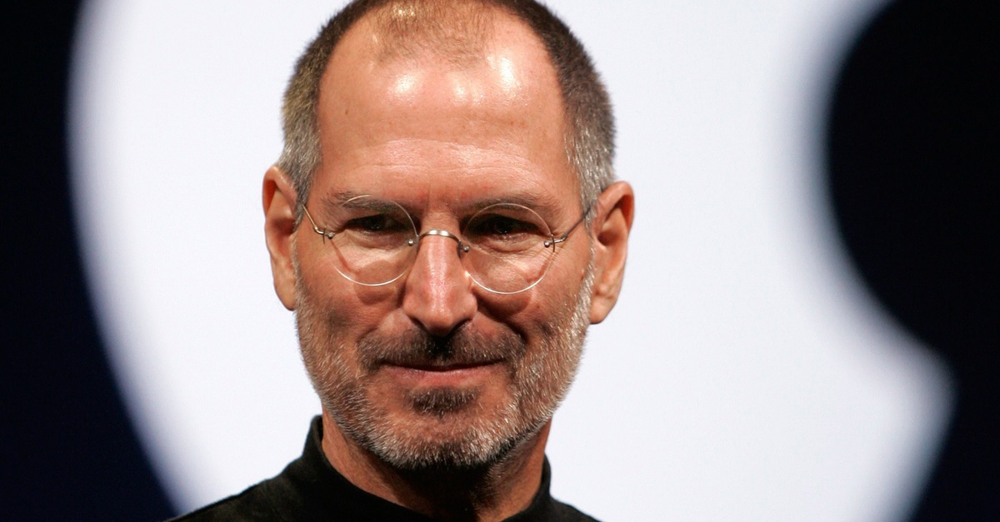
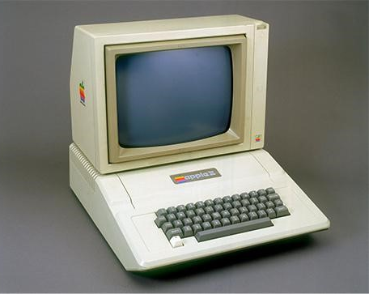
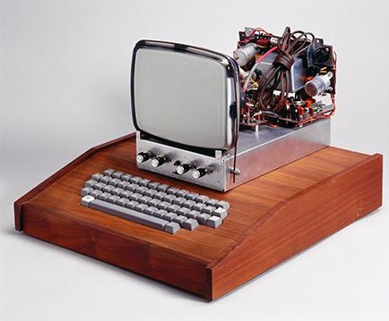
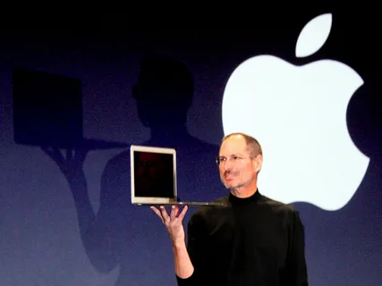

Стив Джобс — это имя, которое стало символом инноваций и креативности в современном мире. Его жизнь и достижения вдохновляют миллионы людей. Я выбрал его личность в качестве примера для своего проекта потому что:
Во-первых
: Он не просто создавал продукты, он стремился изменить мир с их помощью. Его подход к дизайну и функциональности устройств Apple стал революционным. Джобс всегда говорил о том, как важно создавать не просто технологии, а настоящие произведения искусства, которые будут удобны и полезны для людей.
Во-вторых:
умение преодолевать трудности. Его путь к успеху не был легким. Он столкнулся с неудачами и даже был уволен из своей собственной компании. Однако он не сдался.Вместо этого он использовал этот опыт, чтобы вернуться еще более сильным и успешным. Это учит меня тому, что неудачи — это лишь временные препятствия на пути к цели.
В-третьих:
инновационный подход Джобса. Он всегда искал новые идеи и способы улучшить жизнь людей. Его вера в то, что технологии могут сделать жизнь лучше, заставляет меня задуматься о том,как я могу внести свой вклад в мир.
Наконец
, он умел делиться своими идеями и видением так, чтобы другие вдохновлялись ими. Он мастерски презентовал свои продукты на резентациях. Это навык, который также можно развивать,чтобы делиться своими идеями с окружающими.

Стив Джобс родился 24 февраля 1955 года в Сан-Франциско в семье студентов Абдулфаттаха Джандали и Джоан Шибле. Брак не был зарегистрирован. Отец Стива был выходцем из Сирии, мать — из Германии.Отец Джоан был против ее союза с мусульманином: он пригрозил отречься от дочери, если та выйдет замуж за Абдулу, и ребенка решили отдать приемным родителям.
Мальчика усыновила бездетная пара, автомеханик Пол и бухгалтер Клара Джобс Пол Рейнхолд и Клара (урожденная Акопян) Джобс.
Детство
В юности родители Джобса водили его в лютеранскую церковь. В детстве Стив всегда считал себя гуманитарием, и ему не нравилась электроника. К 1959 году семья переехала в район Монта Лома в Маунтин-Вью, Калифорния. Джобсу было трудно учиться в традиционном классе, он часто плохо себя вел и несколько раз был отстранен от занятий. Джобс пропустил 5-й класс и перевелся в 6-й класс средней школы Криттенден в Маунтин-Вью. Над Джобсом часто "издевались" в средней школе . В середине седьмого класса он поставил родителям ультиматум: либо они заберут его из Криттендена, либо он бросит школу. Семья Джобсов не была богатой, и только потратив все свои сбережения, они смогли купить новый дом в 1967 году, что позволило Стиву сменить школу.
На новом месте жительства Джобс смог посещать близлежащую среднюю школу Хоумстед, которая имела прочные связи с Силиконовой долиной. Во время учебы в средней школе Хоумстед Стив стал посещать научно-исследовательский клуб Hewlett-Packard. Впоследствии он получил работу на конвейере компании, трудился разносчиком газет и на складе магазина электроники Haltek, но вскоре они утратили интерес к занятиям. Вместо того, чтобы работать в клубе электроники, Джобс вместе с другом устраивал световые шоу для авангардной джазовой программы Homestead. К выпускному классу в конце В 1972 году Джобс окончил школу и покинул родительский дом. Он поселился в горной хижине с девушкой Крисанн Бреннан .В том же году он стал студентом Рид-колледжа в Портленде, но спустя полгода бросил учебу. Оставив учебу, Джобс продолжал посещать занятия по каллиграфии, что позднее позволило ему создать большое количество шрифтов на компьютерах Apple.
В 1974 году Джобс устроился на работу в компанию по производству видеоигр Atari. В том же году отправился в паломнический тур в Индию, после чего вернулся к работе. С помощью Возняка получил премию за оптимизацию схемы игры Breakout, после чего уволился из Atari.В марте 1975 года сформировался Клуб самодельных компьютеров (Homebrew Computer Club). Сборы его участников проходили в гараже инженера Гордона Френча в Менло-Парке. Здесь Джобс и Возняк представили машину, которая впоследствии стала первым компьютером Apple, — Apple I. Его розничная цена составила $666,66. Это породило шутки о «дьявольской» сумме, которую предстояло заплатить за ПК. Таким образом молодые люди заложили основу целой субкультуры: в подражание им стали появляться многочисленные гаражные клубы, где собирались технари. 1 апреля 1976 года была зарегистрирована компания Apple Computer. В январе 1977 года ее преобразовали в корпорацию Apple У компании появился офис на бульваре Стивенс-Крик в Купертино. Ее логотип в том же году разработал дизайнер Роб Янофф, обыграв надкушенное яблоко двумя терминами — «байт» как единица информации и как глагол «кусать» (англ. bite).


На протяжении 16 лет доход компании приносил компьютер Apple II, результат совместной работы Джобса и Возняка В 1980 году компания анонсировала Apple III. Эти машины работали нестабильно и были сняты с производства в 1985-м.Следующим проектом Джобса стал компьютер Lisa, названный в честь его дочери от Бреннан . В 1979 году был запущен проект Annie, который позже был переименован в Macintosh (или Mac — первый в одноименной линейке персональных компьютеров Apple). 12 декабря 1980 года Apple провела первичное размещение акций (IPO), по итогам которого капитализация компании составила $1,8 млрд. Это IPO стало крупнейшим в США за 24 года после размещения автогиганта Ford . За 43 года компания, созданная Джобсом, подорожала в 1600 раз — на 29 августа 2023 года ее капитализация составляла $2,89 трлн.
Персональный компьютер Macintosh стал первым коммерчески успешным проектом Apple с графическим интерфейсом . Машина задумывалась как конкурент IBM, но ей удалось значительно большее: она перевернула всеобщее представление о том, какими должны быть персональные компьютеры.К 1985 году дела в Apple шли уже не столь радужно. Из-за конструктивных недочетов Macintosh и ошибок менеджмента, включая самого Джобса, компания переживала острый конфликт. Его результатом стало увольнение Джобса решением совета директоров. Спустя несколько месяцев после увольнения Джобс основал компанию NeXT Computer, переманив туда некоторых программистов, инженеров и дизайнеров из Apple . Продукция компании предназначалась для колледжей и университетов. Первый компьютер NeXT появился в 1989 году, он стоил $6500. На нем были предустановлены собрание сочинений Шекспира, тезаурус и словарь цитат.В 1990-м вышла следующая модель NeXTcube с инновационной мультимедийной системой электронной почты. В 1997 году Apple купила NeXT.
В 1986 году Джобс за $5 млн купил у кинопродюсера Джорджа Лукаса 70% подразделения компьютерной графики, принадлежащего киностудии Lucasfilm Так возникла компания Pixar, ставшая впоследствии знаменитой студией графической анимации Джобс сосредоточился на кинопроизводстве. В мае 1991 года он подписал контракт с The Walt Disney Company. Первой полнометражной работой, созданной в этом партнерстве, стал мультфильм «История игрушек». В 1991-м женился на Лорен Пауэлл, выпускнице Пенсильванского университета, обладательнице степени MBA Уортонской школы бизнеса и работавшей в Merrill Lynch Asset Management и Goldman Sachs. В браке родились трое детей: сын Рид, дочери Эрин и Ив. В 2006 году Disney купила Pixar, заплатив за нее $7,4 млрд. Джобс стал членом совета директоров объединенного бизнеса. В 1997 году Джобс вернулся в Apple, став временным СЕО компании. Первым продуктом после возвращения Джобса, который был создан совместно с промышленным дизайнером Джонатаном Айвом, стал легендарный компьютер iMac G3 .За первые полтора месяца продаж удалось реализовать почти 280 тыс. таких машин. В 2001 году открылись первые фирменные магазины Apple Store в Маклине и Глендейле. Тогда же Apple представила медиаплеер iTunes и первое поколение аксессуаров для портативного медиаплеера iPod (снят с производства). Это был первый в мире MP3-плеер небольших габаритов, с уникальным дизайном, продуманным до мелочей интерфейсом и удобным управлением. Спустя пять лет 75% проданных плееров приходилось именно на него.
В январе 2007-го на выставке Macworld Expo Джобс представил первый смартфон компании Apple — iPhone . Журнал Time назвал гаджет изобретением года В следующем году на iTunes открылся магазин приложений App Store. Онлайн-презентации новых iPhone и других продуктов Apple стали событием в масскультуре. Они собирали миллионы зрителей по всему миру.В 2010-м Джобс презентовал первый планшетный компьютер iPad в Центре искусств Йерба-Буэна в Сан-Франциско В 2011 году вышел iPad 2.
 С 1996 году компания Джобса Apple испытывала трудности и В 1997 году Apple купила NeXT, в результате чего Джобс вернулся в компанию, соучредителем которой он был. Джобс стал руководителем Apple Под руководством Джобса компания значительно увеличила продажи, представив iMac и другие новые продукты;с тех пор привлекательный дизайн и мощный брендинг хорошо работали Джобс также основал компания Pixar, которую в дальнешем купил Disney . В 2001 году открылись первые фирменные магазины Apple Store в Маклине и Глендейле. Тогда же Apple представила медиаплеер iTunes и первое поколение аксессуаров для портативного медиаплеера iPod. А 29 июня 2007 года Apple вышла на рынок сотовых телефонов, представив iPhone. В 2010-м Джобс презентовал первый планшетный компьютер iPad. iPhone и iPad — техника, перевернувшая представление о телефонах и персональных компьютерах. 6 июня 2011 года состоялась последняя презентация Джобса. Он представил облачный сервис iCloud и операционную систему iOs В 2011 году Forbes поместил Стива Джобса на 39-е место в списке самых богатых американцев. Аналитики оценили капитал предпринимателя в $7 млрд.